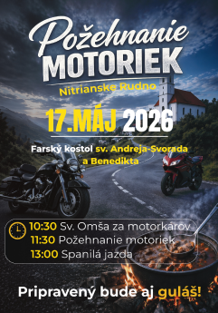

Café AROMA
- Tvorba loga
Logo navrhnuté pre Café Aroma s dôrazom na jednoduchosť a elegantnú identitu značky.
UKÁŽKY MOJEJ PRÁCE PRE KLIENTOV.
Logo navrhnuté pre Café Aroma s dôrazom na jednoduchosť a elegantnú identitu značky.

Plagát pre Zrče zameraný na výraznú vizuálnu komunikáciu a energickú atmosféru koncertu.

Fotodokumentácia podujatia Beachbar Autoshow s dôrazom na atmosféru a detaily automobilov.

Vianočný plagát pre Farnosť Nitrianske Rudno s dôrazom na čistú, čitateľnú vizuálnu komunikáciu.

Plagát pre podujatie Požehnanie motocyklov so zameraním na jednoduchú vizuálnu komunikáciu.

Fotografovanie školského plesu zamerané na zachytenie atmosféry a dôležitých momentov.